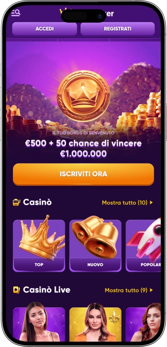
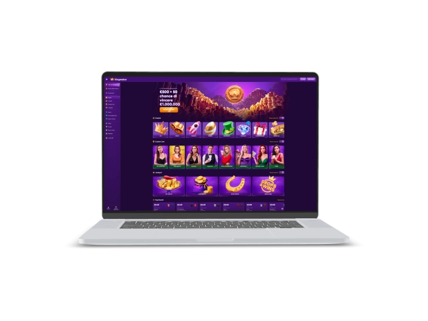

Offerta di benvenuto esclusiva di
Offerta di benvenuto esclusiva di
Kingmaker — casinò online e sportsbook con giochi live, bonus e tornei
Migliori Casinò
Dettagli del Bonus
Casinò
Bonus
Valutare
Free Spins
Info
Ottenere
Vantaggi
-
Migliaia di giochi, scommesse e live
-
Un’unica piattaforma per gioco e sport
-
Tornei ricchi con classifiche e premi
-
Bonus di benvenuto dal profilo ampio
-
Livelli VIP con vantaggi personalizzati
-
Shop premi, sfide e Bonus Crab
-
Assistenza continua e navigazione chiara
- In Kingmaker Casino uniamo casinò online, live e scommesse sportive nello stesso account, così l’esperienza resta lineare e completa. Ci distinguiamo per varietà, eventi ricorrenti e una struttura promozionale che mette insieme tornei, livelli VIP e ricompense interne. Il nostro punto di forza è l’equilibrio tra intrattenimento, organizzazione e continuità delle attività.
Kingmaker App



Informazioni su Kingmaker
Kingmaker Casino si distingue perché uniamo casinò, live e scommesse in un unico ambiente e sosteniamo tutto con tornei, sfide e premi interni. Ci rende riconoscibili anche la combinazione tra bonus di benvenuto, offerte settimanali e livelli VIP con limiti più alti e condizioni più personalizzate.
- 100% fino a €500 + 50 possibilità di vincere €1.000.000 — ingresso forte per la sezione casinò.
- Weekly Reload Bonus 50% fino a €500 — promozione sportiva ricorrente con meccanica chiara.
- Montepremi fino a €2.000.000 e focus tornei fino a €6.000.000 — promozioni dal respiro ampio.
Kingmaker Casino è una piattaforma in cui uniamo casinò online, live casino e sportsbook all’interno dello stesso account. Questa struttura rende il servizio più coerente, perché l’utente può passare da slot, tavoli live e mercati sportivi senza uscire dall’ecosistema.

Nel nostro casinò si percepisce chiaramente un’impostazione ampia e dinamica. Lavoriamo con migliaia di giochi e manteniamo attive categorie classiche, giochi istantanei, jackpot e intrattenimento live. In Kingmaker Casino trovano spazio slot, roulette, blackjack, baccarat, poker e game show. Per chi preferisce il ritmo delle quote, proponiamo anche scommesse sportive, live betting, virtual sports ed esports. Per questo la piattaforma non appare come un semplice casinò tradizionale, ma come un ambiente di intrattenimento più esteso. Una parte importante della nostra identità è legata agli eventi e alla continuità delle attività promozionali. Organizziamo tornei con leaderboard e montepremi importanti, inclusi format ricorrenti su slot, tavoli live e meccaniche jackpot. Nelle singole pagine di gioco si possono vedere condizioni di torneo, puntata minima valida e prize pool corrente. Il sistema si arricchisce ulteriormente con Challenges, Shop e Bonus Crab. Le sfide permettono di ottenere Coins tramite l’attività di gioco e il completamento di obiettivi specifici. I Coins possono poi essere convertiti nello Shop in bonus, free spins, free bets e altre ricompense. Bonus Crab aggiunge una meccanica separata, nella quale i crediti possono trasformarsi in free spins, bonus money e real money. Le promozioni in Kingmaker Casino sono costruite su più livelli. Abbiamo un bonus di benvenuto per il casinò, una proposta distinta per lo sport, offerte settimanali e tornei stagionali. La fedeltà viene valorizzata attraverso livelli VIP, offerte personalizzate, cashback e limiti di prelievo più elevati. Nel complesso Kingmaker Casino è una piattaforma in cui puntiamo non solo sulla quantità di giochi, ma anche su ritmo, eventi, economia interna delle ricompense e continuità dell’esperienza.
Kingmaker: il tuo comfort — regole, sicurezza, support
Kingmaker Casino — regole di accesso, divieti e gioco responsabile
In Kingmaker Casino l’accesso completo alle funzionalità richiede la registrazione di un account personale e l’accettazione delle regole principali della piattaforma. Consentiamo il gioco solo agli utenti che hanno compiuto almeno 18 anni. Ogni utente deve inoltre verificare autonomamente che il gioco online sia consentito secondo la normativa applicabile alla propria situazione. Durante la permanenza nel nostro casinò è importante considerare che la parte giuridica e quella operativa non dipendono solo dalle condizioni generali, ma anche dalle regole delle singole promozioni, dei bonus e dei giochi specifici. Per utilizzare pienamente tutte le sezioni può essere richiesta una verifica dei dati e dei documenti. Possiamo chiedere un documento di identità, una prova di indirizzo e una conferma della titolarità del metodo di pagamento. I documenti devono essere forniti entro i termini previsti, altrimenti possono essere sospese operazioni e funzioni dell’account. In Kingmaker Casino è vietato l’uso del servizio ai minori di 18 anni. Qualsiasi vincita ottenuta da un minorenne viene annullata. Non accettiamo frodi, collusione, abuso dei bonus o condotte che compromettano l’integrità del gioco. I trasferimenti di fondi tra utenti non sono consentiti. Le operazioni finanziarie passano attraverso controlli di sicurezza e, in presenza di sospetti, possiamo annullare un prelievo e avviare verifiche aggiuntive. Il gioco responsabile occupa un ruolo centrale nella nostra politica. Consideriamo il gioco come intrattenimento e non come fonte di reddito. È importante controllare tempo, budget e stato emotivo. Se serve una pausa, è possibile contattare l’assistenza e richiedere un’esclusione temporanea o una self-exclusion completa. La richiesta di autoesclusione viene gestita tramite il nostro supporto email. Per la tutela dei minori raccomandiamo strumenti di filtro e controllo parentale. La permanenza su Kingmaker Casino si basa quindi su età minima, rispetto delle regole, verifica trasparente e approccio consapevole al gioco.
Condizioni di accesso
- • La registrazione di un account personale è necessaria per usare tutte le funzionalità.
- • L’accesso è consentito solo dai 18 anni in su.
- • È richiesto l’accoglimento di Terms & Conditions, Privacy Notice e regole promozionali.
- • L’utente deve verificare personalmente la liceità del gioco online.
Divieti principali
- • I minori non possono registrarsi né giocare.
- • Sono vietati frode, collusione e abuso dei bonus.
- • Non sono ammessi trasferimenti di fondi tra account di utenti.
- • La violazione delle regole può comportare blocco, cancellazione bonus e annullamento del prelievo.
Verifica e documenti
- • Possiamo richiedere passaporto, carta d’identità o patente.
- • Possono essere richieste prova di indirizzo e conferma del metodo di pagamento.
- • Sono possibili controlli aggiuntivi tramite chiamata, verifica video o face verification.
- • I pagamenti possono essere trattenuti fino al completamento delle verifiche.
Gioco responsabile
- • Il gioco va considerato come intrattenimento e non come reddito.
- • È importante monitorare tempo di gioco e spesa.
- • Possiamo applicare pause volontarie o self-exclusion su richiesta.
- • Per la protezione dei minori consigliamo filtri e parental control.
Kingmaker Casino — licenza, protezione dei dati e privacy
In Kingmaker Casino costruiamo la base giuridica del servizio attraverso un quadro unico di documenti: General Terms and Conditions, Privacy Notice, Cookie Notice, regole delle singole promozioni e regole dei giochi specifici. Per noi questo è fondamentale, perché proprio in questi documenti vengono descritti limiti di età, verifiche dell’identità, controlli finanziari, condizioni dei bonus e modalità di accesso alla piattaforma.
La parte legata alla conformità e al presidio normativo si esprime attraverso limiti territoriali, controlli antifrode e procedure KYC. Consentiamo l’uso del servizio solo a utenti maggiorenni e, quando necessario, effettuiamo verifiche supplementari sull’identità e sull’attività dell’account. Le regole prevedono la richiesta di documenti di identità, prova di indirizzo, verifica della titolarità del metodo di pagamento e ulteriori security checks, inclusi controlli telefonici e face verification.
La protezione tecnica si basa su una rete protetta e su tecnologie di cifratura dei dati sensibili. Nelle condizioni generali è specificato che l’accesso ai giochi avviene esclusivamente tramite una rete protetta che utilizza tecnologie per cifrare le informazioni sensibili. Questo mostra che la sicurezza dei dati, per noi, fa parte dell’infrastruttura del servizio e non di una funzione accessoria.
La privacy e la gestione dei cookie completano questo impianto. Spieghiamo il ruolo di essential cookies, functional cookies, performance cookies e targeting cookies, e lasciamo all’utente strumenti per gestire il consenso e le preferenze. Nel blocco dedicato ai cookie è indicato anche il contatto del Data Protection Officer, elemento che rafforza trasparenza e responsabilità nella gestione dei dati personali.
Anche la protezione finanziaria rientra nella nostra struttura di sicurezza. Le regole indicano che i fondi dei clienti sono tenuti separati dai fondi della società in conti bancari dedicati ai clienti. Questo assetto rafforza la tutela del saldo utente e collega la sicurezza non solo ai controlli, ma anche all’architettura con cui custodiamo i fondi.
La riservatezza in Kingmaker Casino non riguarda solo la conservazione dei dati, ma anche la loro eventuale trasmissione a soggetti terzi nell’ambito di controlli di identità, prevenzione delle frodi e procedure regolamentari. Possiamo utilizzare provider esterni per identity verification, controlli di affidabilità e strumenti antifrode, sempre nel quadro delle regole pubblicate. Nel complesso, il nostro blocco di sicurezza nasce dall’unione tra documenti giuridici, verifica dell’identità, cifratura, gestione dei cookie e separazione dei fondi dei clienti.
Kingmaker Casino — depositi, prelievi, sicurezza e tempi di accredito
In Kingmaker Casino le operazioni finanziarie vengono elaborate tramite la società, operatori di pagamento e partner autorizzati. Cerchiamo di utilizzare i metodi disponibili sulla piattaforma e, dove possibile, di processare il prelievo con lo stesso strumento usato per il deposito. Questo rende il flusso più ordinato e coerente con le regole di sicurezza interne. Manteniamo comunque il diritto di usare un metodo differente se quello originario non è disponibile per il prelievo. Prima dell’approvazione del pagamento possiamo richiedere verifica dell’identità, dell’indirizzo, della provenienza dei fondi e della titolarità del metodo di pagamento. Questi controlli rafforzano la protezione dell’account e aiutano il rispetto delle procedure antifrode. Nelle regole è indicato che il requisito minimo di puntata prima del prelievo è x1. Se si tenta di prelevare senza sufficiente attività di gioco sul deposito, possono applicarsi commissioni o revisioni della richiesta. Le richieste di prelievo vengono lavorate dal reparto finanziario entro 3 giorni lavorativi, a condizione che tutti i controlli siano conclusi correttamente. Dopo l’approvazione, i tempi finali dipendono dal provider di pagamento o dalla banca. Sull’account possono essere presenti al massimo 3 richieste di prelievo in sospeso nello stesso momento. Un elemento importante di Kingmaker Casino è che il livello VIP incide direttamente sui limiti giornalieri e mensili di pagamento. Per gli e-wallet l’elaborazione risulta in genere più rapida, mentre le carte bancarie possono richiedere più tempo per via del processamento bancario. Nel complesso, il nostro sistema di deposito e prelievo si basa su sicurezza, identificazione dell’utente, limiti chiari e gestione prevedibile delle richieste.
| Method | Deposit speed | Payout after approval |
|---|---|---|
| Visa | Usually instant | Depends on bank processing |
| Mastercard | Usually instant | Depends on bank processing |
| E-wallets | Usually instant | Often faster than card methods |
| Alternative payment systems | Provider dependent | Provider and verification dependent |
Limiti e soglie principali
- • Prelievo minimo: nelle regole generali non è pubblicata una soglia unica fissa; l’importo può dipendere dal metodo, dal livello account e dalla programmazione interna dei pagamenti.
- • Livello 1: €500 al giorno e €7.000 al mese.
- • Livello 2: €500 al giorno e €10.000 al mese.
- • Livello 3: €800 al giorno e €12.000 al mese.
- • Livello 4: €1.000 al giorno e €15.000 al mese.
- • Livello 5: €1.500 al giorno e €20.000 al mese.
Kingmaker Casino — assistenza clienti, tempi di risposta e qualità del servizio
In Kingmaker Casino consideriamo l’assistenza parte integrante dell’esperienza utente e non solo un supporto tecnico secondario. Il nostro canale principale è la Live Chat, disponibile 24 ore su 24, 7 giorni su 7. Questo formato è adatto alle richieste rapide su registrazione, navigazione, bonus e attività di gioco. Per questioni più dettagliate utilizziamo l’email support@kingmaker.com. È il canale più adatto per verifiche, pagamenti, limitazioni dell’account e situazioni controverse. Se una risposta standard non risolve il caso, è previsto anche un indirizzo dedicato ai reclami: complaints@kingmaker.com. Questo dimostra che il servizio non si limita a un unico punto di contatto. Utilizziamo inoltre il telefono come canale aggiuntivo in alcuni controlli di sicurezza. Le regole prevedono infatti security checks tramite calls/phone e face verification. Per questo il telefono, da noi, ha soprattutto una funzione di conferma dell’identità e di supporto nei casi più delicati, più che di hotline pubblica tradizionale. Sul piano qualitativo puntiamo su personale qualificato e smistamento corretto delle richieste ai dipartimenti competenti. Se il customer service non può chiudere subito il caso, la pratica viene inoltrata e l’utente viene informato sullo stato della richiesta. Questo è particolarmente importante per prelievi, contestazioni e verifiche estese. In termini di tempi, la chat resta il canale più immediato, mentre l’email è più indicata quando serve una traccia formale o l’invio di documenti. Kingmaker Casino si distingue anche per copertura linguistica. Il sito è disponibile in inglese, tedesco, italiano, finlandese, norvegese, polacco, portoghese, ungherese, ceco, spagnolo, francese, greco, arabo, croato e slovacco. Questo rende l’interazione più chiara e flessibile per utenti con esigenze diverse. Nel complesso, la nostra assistenza combina disponibilità continua, percorsi di escalation e una gestione solida dei casi semplici e complessi.
Canali di contatto
- • Live Chat 24/7 come canale principale e più rapido.
- • support@kingmaker.com per richieste dettagliate e documentazione.
- • complaints@kingmaker.com per reclami formali ed escalation.
- • Telefono o chiamata come strumento aggiuntivo per controlli di sicurezza.
Qualità del servizio
- • Prima linea utile per registrazione, bonus e uso della piattaforma.
- • I casi complessi vengono trasferiti ai reparti competenti.
- • L’utente viene aggiornato sullo stato di reclami e verifiche.
- • Il servizio è pensato sia per richieste rapide sia per casi documentali.
Disponibilità linguistica
- • Il sito offre numerose versioni linguistiche.
- • Tra le lingue presenti ci sono italiano, inglese, tedesco, spagnolo e francese.
- • Questo rende più semplice comprendere regole, promozioni e interfaccia.
- • Il multilingua rafforza la chiarezza della comunicazione complessiva.
Fornitori di Software
Intrattenimento e gioco presso Kingmaker
Kingmaker Casino — programma fedeltà, livelli VIP e ricompense
In Kingmaker Casino il programma fedeltà non ruota attorno a un solo bonus, ma a un sistema completo di livelli, privilegi e ricompense interne. Utilizziamo un modello VIP con 5 livelli, nel quale ogni passaggio successivo aumenta personalizzazione e possibilità dell’account. Il livello base definisce già i limiti finanziari di prelievo, mentre i livelli superiori aggiungono vantaggi di servizio e bonus sempre più ricchi. Il Level 2 introduce promozioni sul sito e accesso continuo alla live chat. Il Level 3 apre offerte personalizzate, limiti di prelievo più alti e cashback. Il Level 4 rafforza la struttura con un VIP manager personale. Il Level 5 mantiene offerte personalizzate, limiti elevati, cashback e VIP manager come forma massima di supporto. Una caratteristica importante di Kingmaker Casino è che lo status VIP non è fisso. Le regole indicano che viene determinato in base all’attività degli ultimi 90 giorni di calendario e che, in assenza di gioco attivo per un mese, il profilo viene riportato al livello più basso. Questo rende il sistema dinamico e legato all’attività reale. In parallelo operano Coins, Challenges e Shop. I Coins vengono assegnati per attività e nelle sfide sono riportate formule che includono anche il 5% dei depositi in euro e l’1% delle puntate in euro. I Coins possono poi essere spesi nello Shop per ottenere bonus money, free spins, free bets e crediti per Bonus Crab. In homepage sottolineiamo anche la possibilità di scambiare i Coins con ricompense fino a €1.000. Le regole dello Shop sono importanti per comprendere la profondità del programma. Il Bonus Money richiede wagering x40 e il massimo importo convertibile in saldo reale è pari a 5x il valore iniziale del bonus. Per i free spins, le vincite vengono trasformate in bonus con wagering x40 e rilascio massimo fino a €50. Bonus Crab introduce una meccanica ulteriore: 500 credits possono dare accesso a free spins, bonus money o real money. Nel complesso, la fedeltà in Kingmaker Casino combina livelli VIP, cashback, limiti più alti, Coins, sfide, Shop e premi interni.
Condizioni di partecipazione
- • Registrazione dell’account e accettazione delle regole della piattaforma.
- • Età minima di 18 anni e diritto a utilizzare il servizio.
- • Idoneità a ricevere bonus e assenza di restrizioni sull’account.
- • Mantenimento dell’attività di gioco per progredire nei livelli VIP.
Livelli VIP e funzionamento
- • Level 1 — livello base; limiti di prelievo fino a €500 al giorno e €7.000 al mese.
- • Level 2 — promozioni sul sito e live chat 24/7; limiti fino a €500 al giorno e €10.000 al mese.
- • Level 3 — offerte personalizzate, limiti più alti, cashback 5% fino a €1.000; limiti fino a €800 al giorno e €12.000 al mese.
- • Level 4 — offerte personalizzate, limiti più alti, cashback 10% fino a €2.000 e VIP manager personale; limiti fino a €1.000 al giorno e €15.000 al mese.
- • Level 5 — offerte personalizzate, limiti più alti, cashback 15% fino a €3.000 e VIP manager personale; limiti fino a €1.500 al giorno e €20.000 al mese.
- • L’assegnazione del livello dipende dall’attività degli ultimi 90 giorni.
- • Un mese senza gioco attivo può riportare automaticamente al livello più basso.
Bonus e ricompense disponibili
- • Coins — maturano con l’attività; nelle sfide compaiono formule del 5% sui depositi in euro e dell’1% sulle puntate in euro.
- • Shop rewards — scambio dei Coins con ricompense fino a €1.000.
- • Bonus Money — wagering x40; rilascio massimo pari a 5x il valore del bonus.
- • Free Spins — le vincite diventano bonus con wagering x40; rilascio massimo fino a €50.
- • Free Bets — disponibili nello Shop e utilizzabili nella sezione sport.
- • Bonus Crab — 500 credits con possibili premi in free spins, bonus money e real money.
- • Cashback VIP — top 3 livelli: Level 3 fino a €1.000, Level 4 fino a €2.000, Level 5 fino a €3.000.
Kingmaker Casino — bonus, vincite, offerte speciali e tornei
In Kingmaker Casino l’architettura promozionale non si limita a un solo bonus di benvenuto. Utilizziamo diversi livelli di offerte che coinvolgono casinò, sport, tornei e meccaniche speciali interne. Il punto d’ingresso più evidente per il casinò è il welcome bonus del 100% fino a €500 con 50 possibilità di vincere €1.000.000. Per la parte sportiva esiste un welcome separato fino a €100, utile per chi preferisce iniziare dalle quote. A questo si aggiunge il Weekly Reload Bonus del 50% fino a €500 nella sezione sport. Questa promozione si basa sul primo deposito settimanale, sul completamento di requisiti con quote idonee e sulla richiesta del bonus via live chat o email. Oltre ai bonus d’ingresso e reload, Kingmaker Casino si distingue per la dimensione dei tornei. In homepage mettiamo in evidenza un potenziale complessivo di tornei fino a €6.000.000. Nelle pagine di gioco compaiono regolarmente promo con prize pool reali e puntata minima di partecipazione. Tra gli esempi recenti si vedono Drops & Wins con €2.000.000, World Cup Casino Tournament con €1.988.000, Fruit Train Ride con €15.000, Winter Love with Booming con €10.000, Gold Saloon Live con €1.100 e Slot of the Week con €1.100. Nei tornei conta non solo il montepremi, ma anche la chiarezza della soglia d’ingresso: spesso viene indicata una puntata minima da €0.30, €0.50 o €1.00. Questo rende l’accesso più leggibile. Un ulteriore livello di offerte è rappresentato dalle Challenges. Assegniamo Coins per attività legate a depositi, numero di spin, scommesse sportive, vittorie e posizioni nei tornei. Per singoli obiettivi si possono ottenere 10, 20, 30, 50, 100, 150, 200 e perfino 250 Coins. Queste ricompense alimentano poi lo Shop e il Bonus Crab. Bonus Crab è una meccanica autonoma nella quale 500 credits possono trasformarsi in free spins, bonus money o real money. Per questo Kingmaker Casino appare come una piattaforma in cui i bonus non sono solo un incentivo iniziale, ma una presenza continua fatta di eventi, premi e attività ricorrenti.
Bonus e offerte principali
- • Welcome Bonus Casino — 100% fino a €500 + 50 possibilità di vincere €1.000.000; bonus di ingresso principale per il casinò.
- • Welcome Bonus Sport — 100% fino a €100; formula d’ingresso dedicata alle scommesse sportive.
- • Weekly Reload Bonus Sport — 50% fino a €500; disponibile una volta a settimana con deposito minimo di €20.
- • Drops & Wins — montepremi di €2.000.000; promozione ampia su giochi selezionati.
- • World Cup Casino Tournament — montepremi di €1.988.000; esempio di torneo tematico di alto profilo.
- • Fruit Train Ride — montepremi di €15.000; torneo slot con accesso chiaro.
- • Winter Love with Booming — montepremi di €10.000; iniziativa stagionale su slot selezionate.
- • Gold Saloon Live — montepremi di €1.100; torneo live con puntata minima da €0.30.
- • Slot of the Week — montepremi di €1.100; attività ricorrente settimanale.
- • CashCrab Monthly Race — prize pool di alcune migliaia di euro; corsa mensile dedicata.
- • Monthly Race — montepremi di €2.500; formato continuativo di competizione.
- • Challenges — missioni con ricompense da 10 a 250 Coins per depositi, scommesse, spin e risultati.
- • Bonus Crab — 500 credits con possibili premi in free spins, bonus money e real money.
Kingmaker Casino — giochi e scommesse disponibili
In Kingmaker Casino non ci limitiamo a una sola direzione di gioco, ma costruiamo il prodotto su più verticali. La piattaforma si fonda su slot, live casino, table games, jackpot e sportsbook. Per chi preferisce il casinò classico, abbiamo slot di diversi provider, comprese varianti con bonus buy, jackpot e modalità demo. Nella sezione live proponiamo roulette, blackjack, baccarat, poker e game show. Si distinguono anche tavoli internazionali e sezioni speciali come Gold Saloon. Nel catalogo compaiono American, European e French roulette, ampliando la scelta anche all’interno della stessa disciplina. Nei tavoli e nel live sono presenti anche categorie Baccarat & Dice e Poker. Oltre ai classici, nel catalogo si notano instant games e formati rapidi in stile crash. Questo rende l’offerta più varia anche sul piano del ritmo. Kingmaker Casino mostra inoltre una presenza forte sul lato provider. Nei reparti aperti si incontrano Pragmatic, Playtech, Relax Gaming, SA Gaming, VivoGaming, Evoplay, Booming, OneTouch, FBM, Amatic e altri studi. Questo insieme mantiene ampio il ventaglio dei generi, dai fruttati classici ai Megaways moderni, dagli hold and win ai tavoli live e ai game show. Una caratteristica importante è poi il sportsbook. Offriamo sportsbook, live betting e virtual sports. Tra gli sport evidenziati sul sito compaiono football, tennis, table tennis, basketball, ice hockey, american football e baseball. Un blocco separato è dedicato agli esports, con riferimenti a Dota 2, League of Legends e Counter-Strike. Per questo Kingmaker Casino funziona non solo come casinò, ma anche come piattaforma completa per scommesse, linee live ed eventi virtuali. Considerando l’offerta nel suo insieme, permettiamo di alternare sessioni tranquille alle slot, tavoli dal vivo, caccia ai jackpot e mercati sportivi più dinamici.
Categorie principali
- • Slot — classiche, moderne, bonus buy, jackpot e modalità demo.
- • Live Casino — roulette, blackjack, baccarat, poker e game show.
- • Table Games — American, European e French roulette, blackjack, baccarat e poker.
- • Jackpots — Hot Jackpots, Lucky Jackpots, New Jackpots, Daily Jackpots, Drops & Wins e Jackpot Play.
- • Instant Games — formati rapidi e meccaniche ad alta immediatezza.
- • Sportsbook — scommesse pre-match e live.
- • Virtual Sports — eventi sportivi virtuali.
- • Esports — Dota 2, League of Legends e Counter-Strike.
- • Sport principali — football, tennis, table tennis, basketball, ice hockey, american football e baseball.
Kingmaker Casino — puntate minime e massime
In Kingmaker Casino le soglie minime dipendono dalla sezione, dal torneo, dal gioco e dall’eventuale modalità bonus. Nelle condizioni aperte e nelle card dei tornei vediamo partenze da €0.10 per alcune attività del casinò, da €0.30 per determinati tornei live e da €0.50 per la puntata sportiva su singolo evento. Il limite massimo non è definito da un unico valore generale: dipende dal gioco specifico, dall’evento sportivo, dal tavolo e dalla gestione interna del rischio. È inoltre importante ricordare che, quando si gioca con bonus money, la puntata massima resta fissata a €5 fino al completamento del wagering.
| Game Type | Min Bet | Max Bet |
|---|---|---|
| Sportsbook | €0.50 | Varies by event and market limits |
| Casino games / qualifying spins | from €0.10 | Varies by game |
| Live tournaments | from €0.30 | Varies by table and tournament |
| Standard slot tournaments | from €0.50 | Varies by tournament and game |
| Selected promo tournaments | from €1.00 | Varies by promotion |
| Bonus money play | Game dependent | €5 until wagering is completed |
Kingmaker Casino — tornei e leaderboard: partecipazione, punteggio e premi
In Kingmaker Casino i tornei rappresentano uno dei modi più visibili per entrare nel ritmo della piattaforma. Mostriamo regolarmente prize pool, puntata minima valida, tempo residuo e leaderboard direttamente nella card del torneo o nella pagina del gioco. Per partecipare, di norma basta aprire un gioco o un tavolo live idoneo, verificare che il torneo sia attivo e giocare con la puntata minima richiesta. Negli esempi attuali vediamo soglie d’ingresso da €0.30, €0.50 e €1.00 a seconda del formato. L’assegnazione dei punti e la posizione finale dipendono dalle regole del singolo torneo, quindi il riferimento centrale resta sempre la sezione Terms and Conditions della promozione. In pratica vengono considerate solo puntate o spin qualificanti, all’interno della finestra temporale prevista e sui giochi inclusi nel pool del torneo. Contano quindi il tipo di gioco, il rispetto della puntata minima e l’attività svolta nel periodo valido. La posizione si segue attraverso il blocco Leaderboard presente nella pagina del torneo o del gioco. Al termine del torneo, i risultati vengono chiusi e il premio viene assegnato in base alla classifica finale. La forma del premio dipende dalla promozione: può arrivare come bonus, premio in denaro o ricompensa interna come Coins. In Kingmaker Casino la logica dei tornei unisce quindi ingresso semplice, classifica visibile e controllo costante delle condizioni della promozione.
Come partecipare
- • Aprire un gioco o tavolo live incluso nel torneo.
- • Verificare prize pool, durata e puntata minima valida.
- • Giocare solo durante la finestra attiva del torneo.
- • Rispettare le regole specifiche del leaderboard.
Cosa influenza la posizione
- • Puntate o spin qualificanti.
- • Puntata minima indicata nella card della promozione.
- • Giochi inseriti nella lista del torneo.
- • Attività svolta esclusivamente nel periodo valido.
Come ricevere il premio
- • Attendere la chiusura del torneo e il consolidamento dei risultati.
- • Verificare la posizione finale nel leaderboard.
- • Ricevere la ricompensa nel formato previsto dalla promozione.
- • Considerare che il premio può essere bonus, denaro o ricompensa interna.
Come seguire la classifica
- • Aprire la pagina del torneo o del gioco collegato.
- • Controllare il leaderboard visibile nell’interfaccia.
- • Confrontare la propria attività con le condizioni del torneo.
- • Tenere d’occhio il termine di chiusura della promozione.
FAQ
Sì, nel nostro catalogo sono presenti versioni demo di molte slot, giochi live e titoli dei provider. È un modo pratico per conoscere meccaniche, ritmo e interfaccia prima del gioco con denaro reale.
Quando possibile cerchiamo di usare lo stesso metodo di pagamento. Se però non è disponibile per il prelievo, la società può utilizzare un altro sistema valido.
La responsabilità per tasse, imposte e oneri collegati alle vincite resta in capo all’utente. Questo principio è indicato nelle regole della piattaforma.
Se l’evento parte entro 48 ore dall’orario ufficiale iniziale, le scommesse possono restare valide. In caso contrario possono essere annullate con rimborso della puntata.
Sì, quando si gioca con bonus money la puntata massima è €5 fino al completamento dei requisiti di wagering. È una regola importante per l’uso corretto del bonus.